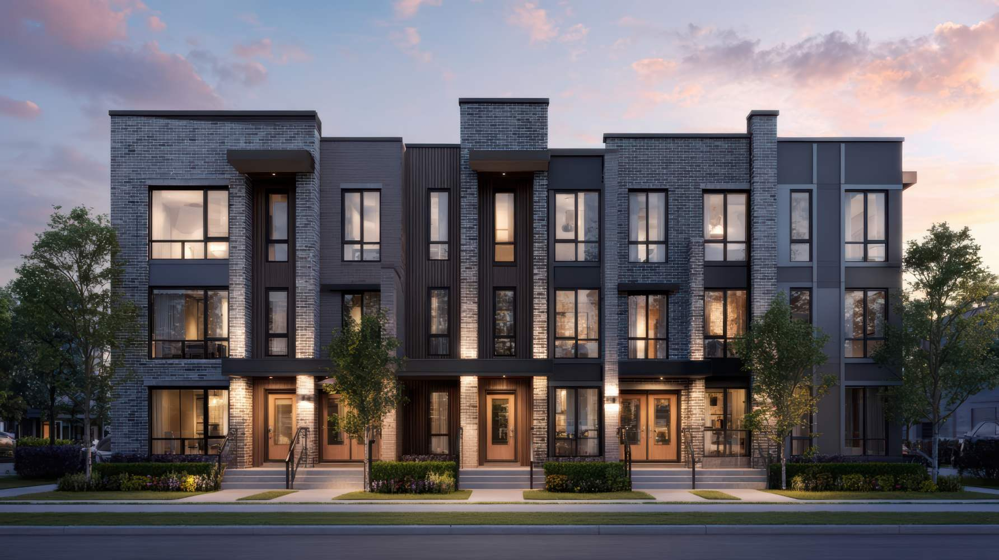

Pilotage technique centralisé · Patrimoine immobilier
Reprenez durablement le contrôle de votre patrimoine immobilier.
Vous prenez les décisions. Nous vous apportons la vision.
Gestion technique centralisée auprès d’un seul et unique interlocuteur. Regroupez vos contrats, vos obligations réglementaires, vos rapports d'intervention et vos réserves dans une plateforme unique pour anticiper les risques, sécuriser vos décisions et piloter votre patrimoine avec confiance.
ALKIS pilote, coordonne et fait réaliser les interventions techniques de votre patrimoine en s'appuyant sur vos prestataires habituels ou sur son réseau de partenaires qualifiés.

Les 5 questions qui révèlent les angles morts de votre patrimoine
En quelques secondes, faites le point. Comptez les questions auxquelles vous pouvez répondre « oui » sans hésiter.
Faites le test
- Tous mes contrats sont-ils à jour ?
- Tous les passages prévus ont-ils bien été réalisés ?
- Tous les rapports ont-ils été récupérés et exploités ?
- Toutes les réserves ont-elles été traitées ?
- Ai-je une vision claire de mes risques et de mes échéances ?
Votre résultat
Gérer un patrimoine, c'est gérer une complexité qui ne cesse de croître
Vous ne manquez pas de prestataires. Vous manquez de temps pour les piloter. Et certaines situations vous parlent sûrement.
Des contrats dispersés
Répartis entre plusieurs prestataires, sans vision d'ensemble.
Des rapports introuvables
Reçus mais jamais centralisés, ni vraiment exploités.
Des réserves qui s'accumulent
Non levées, qui ressurgissent au pire moment.
Des échéances oubliées
Contrôles, renouvellements et vérifications qui passent à la trappe.
Des prestataires difficiles à relancer
Du temps perdu à courir après les interventions.
Un manque de visibilité sur le réalisé
Difficile de savoir ce qui a vraiment été fait sur le terrain.
Des informations dispersées
Éclatées entre plusieurs interlocuteurs, sans point central.
Pourquoi externaliser le pilotage technique ?
Le problème n'est pas de trouver un prestataire. Le véritable enjeu est de :
- coordonner plusieurs intervenants ;
- suivre les contrats ;
- récupérer les rapports ;
- relancer les prestataires ;
- suivre les réserves ;
- anticiper les échéances ;
- conserver une vision d'ensemble.
Votre temps a plus de valeur lorsqu'il est consacré à vos clients et à la gestion de votre patrimoine qu'à la coordination technique quotidienne.
Tous vos sujets techniques. Un seul interlocuteur.
ALKIS devient votre partenaire de pilotage : un interlocuteur unique pour piloter toute la technique de votre patrimoine. Nous coordonnons vos prestataires, suivons vos contrats et anticipons vos échéances. Vous gardez toutes les décisions ; nous prenons en charge la charge opérationnelle.
Ce que nous prenons en charge
Coordination
Un seul interlocuteur pour l'ensemble de vos intervenants.
Suivi
Chaque intervention suivie jusqu'à sa réalisation complète.
Reporting
Une vision claire et synthétique de ce qui est fait.
Contrats
Vos contrats recensés, suivis et anticipés.
Échéances
Vos obligations techniques tenues dans les délais.
Visibilité
Vous savez en permanence où vous en êtes.
Pourquoi ALKIS est différent ?
Nous ne réalisons pas les travaux. Nous ne vendons pas un logiciel. Nous ne dépendons d'aucun prestataire. Notre rôle est de défendre les intérêts de votre patrimoine et de coordonner les acteurs techniques en toute indépendance. Vous pouvez conserver vos prestataires existants et nous confier uniquement le pilotage, ou nous confier l'ensemble d'un sujet pour disposer d'un interlocuteur unique. Nous travaillons avec vos prestataires existants lorsque cela est pertinent.
Une vision claire, des risques hiérarchisés
ALKIS ne se contente pas de rassembler des informations. Nous vous donnons une lecture priorisée : vous savez immédiatement ce qui va bien, ce qui mérite attention et ce qui doit être traité en urgence.
Une lecture hiérarchisée de votre patrimoine
Conforme — rien à signaler.
À surveiller — point de vigilance à garder à l'œil.
Action rapide recommandée — à traiter à court terme.
Risque majeur — intervention nécessaire sans délai.
Les deux niveaux que nous suivons
Au niveau des contrats
Le contrat existe-t-il, la fréquence est-elle respectée, les passages réalisés, les rapports récupérés et exploités ?
Au niveau technique
Quelles réserves, anomalies ou risques subsistent, et quelles actions correctives engager ?
Nos interventions s'adaptent à vos besoins
Vous n'avez pas besoin de nous confier immédiatement l'ensemble de votre patrimoine. De nombreuses collaborations commencent simplement par une urgence, un devis ponctuel ou un audit d'état des lieux, avant d'évoluer vers un accompagnement plus global. Et vous choisissez toujours : nous confier le pilotage de vos prestataires existants, ou un sujet entier avec un interlocuteur unique à la clé.
Intervention ponctuelle
Un sujet technique à traiter, coordonné de bout en bout.
Urgence
Un sujet urgent pris en charge et coordonné rapidement.
Contrat de maintenance
Vos contrats suivis, renouvelés et contrôlés dans le temps.
Audit d'état des lieux
Une première vision claire de votre patrimoine technique.
Audit approfondi
Analyse documentaire, contractuelle et technique, avec plan d'actions.
Pilotage technique externalisé
Toute votre technique coordonnée ; vous gardez la décision.
Choisissez le niveau d'accompagnement adapté à votre patrimoine
Trois formules, un même principe : vous décidez, nous pilotons l'opérationnel.
Les modes d'intervention répondent à votre besoin du moment. Les offres définissent le niveau d'accompagnement que vous souhaitez confier à ALKIS.
Conseil
Vous gérez au quotidien, ALKIS sécurise vos décisions. Bénéfice : plus de visibilité.
Pilotage
ALKIS coordonne et suit vos prestataires au quotidien. Bénéfice : plus de temps.
Délégation technique
ALKIS pilote durablement toute votre technique. Bénéfice : plus de sérénité.
Exemples de missions confiées à ALKIS
Pour vous projeter concrètement, voici le type de missions que nous prenons en charge.
- suivi d'un contrat VMC ;
- coordination d'une réfection de toiture ;
- gestion d'une urgence plomberie ;
- mise en place d'un contrat nuisibles ;
- audit des contrats techniques d'une copropriété ;
- suivi des réserves après travaux ;
- coordination de plusieurs prestataires sur un même site.
Un patrimoine bien piloté vaut plus, longtemps.
Vous réduisez
- moins d'urgences
- moins de risques
- moins de coûts cachés
Vous gagnez
- plus de visibilité
- plus de maîtrise
- plus de valeur patrimoniale
- plus de sérénité
Une présence locale en Île-de-France
Basée à Nanterre, ALKIS accompagne les syndics, administrateurs de biens, bailleurs et gestionnaires de patrimoine sur l'ensemble de l'Île-de-France. La proximité terrain, la réactivité et la connaissance des acteurs locaux constituent un levier essentiel pour un pilotage technique efficace.
Demandez votre audit gratuit
En quelques échanges, ALKIS vous remet une lecture claire de votre patrimoine technique.
Vous recevez
- une vision claire de votre patrimoine ;
- un état des contrats ;
- un état des risques ;
- un suivi des échéances ;
- des actions priorisées ;
- des recommandations concrètes ;
- un reporting synthétique.
Sous réserve des documents et accès disponibles. L'audit gratuit est un état des lieux initial reposant sur une première analyse des documents mis à disposition ; toute analyse approfondie peut faire l'objet d'une prestation complémentaire.
Reprenez la maîtrise de votre patrimoine technique
Un interlocuteur unique pour piloter toute la technique de votre patrimoine. Commencez par un audit gratuit ou une demande de devis — sans engagement.